About
Dark Matter live
Choose your model
How to add your results
Single HNL, tau dominance (BC8)
Awaiting data — please open a PR to populate this model
y-axis: |U_τ|² (mixing)
Dark Matter live
Dark Matter live
Disclaimer:
The plots on this page are not approved or reviewed by any official CERN or dark-matter working group. For queries, contact Brij Kishor Jashal at
brij@cern.ch
.